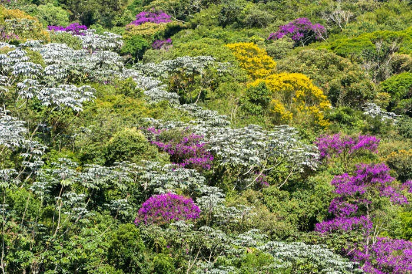
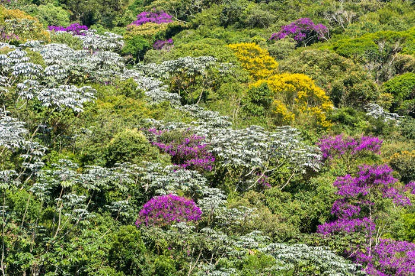

A Mata Atlântica é um bioma composto por um conjunto de florestas e ecossistemas que equivalem a 15% do território brasileiro, sendo a 2ª floresta mais extensa do Brasil, abrangindo a costa leste, sudeste e sul do país, além de parte do Paraguai e serras. Porém, desde 1500, essa área tem sofrido com desmatamento e queimadas, correspondendo a só 7% da mata original.
É um dos biomas mais ricos do planeta, isto é, com maior biodiversidade. A Mata Atlântica existem 20 mil espécies vegetais, sendo 35% das espécies do Brasil, formando uma floresta densa e fechada. A fauna também é muito rica, com centenas de espécies de aves, anfíbios, répteis, peixes e mamíferos, como o Mico-Leão-Dourado.